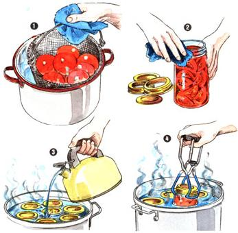

Pay heed to the new USDA guidelines for preserving tomatoes, and to the author's heartfelt plea:
I canned my first batch of homegrown produce 58 years ago, when I was just nine years old. Countless quart and pint jars later, the tomato remains my favorite garden product to put up . . . mostly because it's my favorite to eat.
I shudder, however, when I think of how many people in this country are innocently using unsafe tomato-canning techniques. For instance, if you are following a canning guide that's more than two years old, you may not be aware that the raw-pack, boiling-water-bath method-commonly used over the past several decades-is no longer considered safe for tomatoes. And I can't even count the number of times I've heard people say-to my horror-that they still can their tomatoes the old-fashioned open-kettle way because "they never hurt my grandmother or my mother, and they won't hurt me."
Granted, botulism poisoning from canned tomatoes is relatively rare-but when you're talking about a disease that destroys human life, rare isn't enough. I have seen the ravages of the deadly Clostridium botulinum. It is an insidious killer, for it reveals no clues to its presence: no mold, no odor, no color or taste change. It will grow and thrive in a perfectly sealed (but insufficiently heated) canning jar.
And although tomatoes are generally considered a high-acid food-one that supposedly presents a hostile environment for botulinum-the fact is that their pH can vary greatly, not only by variety, but by a whole range of other factors. Too-green tomatoes, overripe tomatoes, tomatoes from pulled vines, bruised tomatoes, low-acid-type tomatoes, tomatoes grown in low-acid soil . . . all have been blamed for producing "killer jars."
Finally, after years of debate (and the controversy continues), the U.S. Department of Agriculture has changed its recommendations for canning tomatoes: The USDA has dropped the cold-pack, boiling-water-bath method from its list of approved techniques . . . recommended that an acidifier be added to tomato products (particularly low-acid and very ripe produce) . . . and lengthened its processing-time guidelines for the hot-pack, boiling-water-bath method (see the sidebar below).
As for me . . . well, I hot-pack all my tomatoes and process them in sterile jars in a pressure canner at 15 pounds pressure for 10 minutes-which exceeds even the new USDA guidelines. Why? Because, after years of experience, I've decided that taking chances is a fool's game. As far as I'm concerned, there's just no such thing as too safe when it comes to the food my family and friends will eat!
[1] Use only firm, ripe tomatoes. To loosen skins, dip the fruit into boiling water for about 1/2 minute; then plunge them into cold water. Cut out the stem ends and peel the tomatoes.
[2] Quarter the peeled tomatoes and bring them to a boil. Pour boiling-hot fruit into clean glass jars, leaving 1/2 inch clear space at the tops of the containers. If tomatoes are very ripe or bruised, add 1/2 teaspoon citric acid or 2 tablespoons lemon juice per quart. Wipe jars with a damp cloth. Secure lids.
[3] Put filled jars into canner containing boiling water; add more boiling water if necessary to bring liquid an inch or two over tops of containers. (Be careful not to pour water directly on the jars.) Process hot-packed tomatoes for the following times, starting when the water in your canner comes to a rolling boil:
PINTS: 35 minutes
QUARTS: 45 minutes
[4] Boil gently and steadily throughout the period; add boiling water if necessary to keep containers covered. Remove jars immediately when processing time is up.
Cold Pack:
Do not cold-pack tomatoes that are to be processed in a boiling water bath.
Your local Agricultural Extension Service agent should be able to give you guidelines specific to your area for pressurecanning tomatoes and other homegrown foods. Look in the white pages of your telephone directory under "U.S. Government-Agriculture, Department Of. "
|
 |
|
|